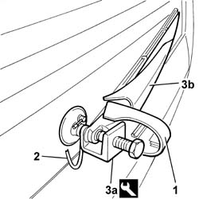

5050C34 REAR WIPER ARM WITH BLADE - R+R
- Path
- Procedures > 50 AUXILIARY UNITS > 5050 SCREEN WASHERS AND HEADLAMP WASH/WIPE > 5050C REAR WASH/WIPE > 5050C34 REAR WIPER ARM WITH BLADE - R+R
- Kind
- repair procedure (removal / refitting; the operation number is the code)
- Applies to
- all engines; all production periods
- Interactive page
- https://sloeber94.github.io/elrnDB-fUlss/en/#/179007509
Applies to: all engines; all production periods
 Removing
Removing
 Refitting
Refitting1. Open the cover.
2. Disconnect the rearscreen washer fluid pipe.
- Undo the fixing nut.
3. Extract the wiper arm (3b), complete with blade, using the tool (3a).
 | Description | Code | Function |
|---|---|---|---|
3a | Extractor | 1.870.717.000 | Removing wiper arm |

Applies to: all engines; all production periods
Refitting
Removing- Position the wiper arm complete with blade.
- Tighten the fixing nut.
- Connect the rearscreen washer fluid pipe.
- Close the shield.